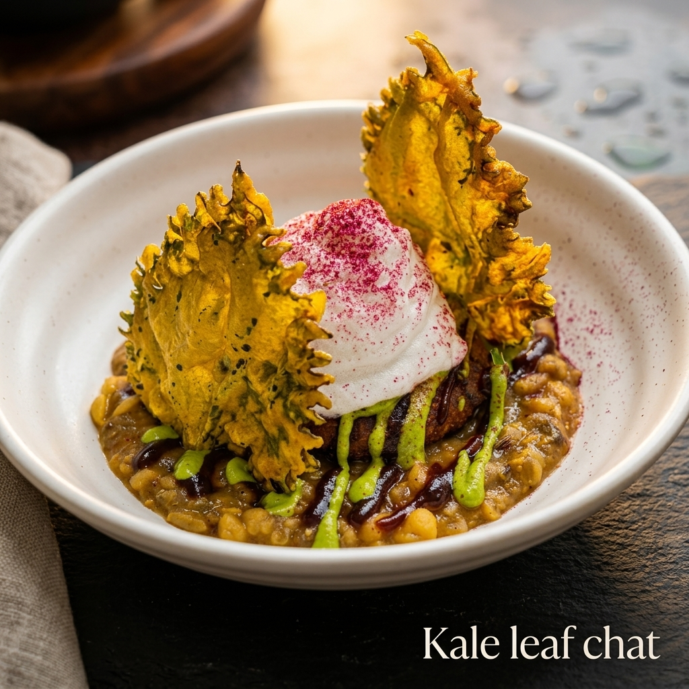

Our Story & Heritage
Indimo is a luxury culinary experience brand shepherding experiential street food concepts globally. Born from a legacy of fine Indian hospitality, our curation fuses regional historical recipes with theatrical finishing techniques, custom tablescaping, and Michelin-inspired styling.
Our Core Philosophy
1. Cultural Honesty
We never dilute regional flavors. Our spice recipes are sourced directly from street side families, executed using authentic techniques like open clay coal pits and iron griddles.
2. Immersive Scenography
Our food stations are works of art. We work with interior designers to design setups incorporating travertine stone, custom clay structures, brass screens, and luxury candlelight layouts.
3. Theatrical Service
Chefs operate as performance artists, finishing dishes in front of guests with culinary showmanship—liquid nitrogen freezing, smoking herbs, and hand-shaving truffles.
State-of-the-Art Kitchen Facility
Our commercial modular kitchen complies with the highest standards of international hygiene and quality. Ergonomically designed to minimize staff movement and maximize safety, our cooking zones feature specialized cooling chambers, hot-holding galleries, and a comprehensive Food Safety Management System.
This infrastructure ensures that even the most complex molecular courses and street recipe arrays are executed at scale with Michelin-level precision.
